- 00 开篇词 从 0 开始搭建一个企业级 Go 应用.md.html
- 01 IAM系统概述：我们要实现什么样的 Go 项目？.md.html
- 02 环境准备：如何安装和配置一个基本的 Go 开发环境？.md.html
- 03 项目部署：如何快速部署 IAM 系统？.md.html
- 04 规范设计（上）：项目开发杂乱无章，如何规范？.md.html
- 05 规范设计（下）：commit 信息风格迥异、难以阅读，如何规范？.md.html
- 06 目录结构设计：如何组织一个可维护、可扩展的代码目录？.md.html
- 07 工作流设计：如何设计合理的多人开发模式？.md.html
- 08 研发流程设计（上）：如何设计 Go 项目的开发流程？.md.html
- 09 研发流程设计（下）：如何管理应用的生命周期？.md.html
- 10 设计方法：怎么写出优雅的 Go 项目？.md.html
- 11 设计模式：Go常用设计模式概述.md.html
- 12 API 风格（上）：如何设计RESTful API？.md.html
- 13 API 风格（下）：RPC API介绍.md.html
- 14 项目管理：如何编写高质量的Makefile？.md.html
- 15 研发流程实战：IAM项目是如何进行研发流程管理的？.md.html
- 16 代码检查：如何进行静态代码检查？.md.html
- 17 API 文档：如何生成 Swagger API 文档 ？.md.html
- 18 错误处理（上）：如何设计一套科学的错误码？.md.html
- 19 错误处理（下）：如何设计错误包？.md.html
- 20 日志处理（上）：如何设计日志包并记录日志？.md.html
- 21 日志处理（下）：手把手教你从 0 编写一个日志包.md.html
- 22 应用构建三剑客：Pflag、Viper、Cobra 核心功能介绍.md.html
- 23 应用构建实战：如何构建一个优秀的企业应用框架？.md.html
- 24 Web 服务：Web 服务核心功能有哪些，如何实现？.md.html
- 25 认证机制：应用程序如何进行访问认证？.md.html
- 26 IAM项目是如何设计和实现访问认证功能的？.md.html
- 27 权限模型：5大权限模型是如何进行资源授权的？.md.html
- 28 控制流（上）：通过iam-apiserver设计，看Web服务的构建.md.html
- 29 控制流（下）：iam-apiserver服务核心功能实现讲解.md.html
- 30 ORM：CURD 神器 GORM 包介绍及实战.md.html
- 31 数据流：通过iam-authz-server设计，看数据流服务的设计.md.html
- 32 数据处理：如何高效处理应用程序产生的数据？.md.html
- 33 SDK 设计（上）：如何设计出一个优秀的 Go SDK？.md.html
- 34 SDK 设计（下）：IAM项目Go SDK设计和实现.md.html
- 35 效率神器：如何设计和实现一个命令行客户端工具？.md.html
- 36 代码测试（上）：如何编写 Go 语言单元测试和性能测试用例？.md.html
- 37 代码测试（下）：Go 语言其他测试类型及 IAM 测试介绍.md.html
- 38 性能分析（上）：如何分析 Go 语言代码的性能？.md.html
- 39 性能分析（下）：API Server性能测试和调优实战.md.html
- 40 软件部署实战（上）：部署方案及负载均衡、高可用组件介绍.md.html
- 41 软件部署实战（中）：IAM 系统生产环境部署实战.md.html
- 42 软件部署实战（下）：IAM系统安全加固、水平扩缩容实战.md.html
- 43 技术演进（上）：虚拟化技术演进之路.md.html
- 44 技术演进（下）：软件架构和应用生命周期技术演进之路.md.html
- 45 基于Kubernetes的云原生架构设计.md.html
- 46 如何制作Docker镜像？.md.html
- 47 如何编写Kubernetes资源定义文件？.md.html
- 48 IAM 容器化部署实战.md.html
- 49 服务编排（上）：Helm服务编排基础知识.md.html
- 50 服务编排（下）：基于Helm的服务编排部署实战.md.html
- 51 基于 GitHub Actions 的 CI 实战.md.html
- 特别放送 Go Modules依赖包管理全讲.md.html
- 特别放送 Go Modules实战.md.html
- 特别放送 IAM排障指南.md.html
- 特别放送 分布式作业系统设计和实现.md.html
- 特别放送 给你一份Go项目中最常用的Makefile核心语法.md.html
- 特别放送 给你一份清晰、可直接套用的Go编码规范.md.html
- 直播加餐 如何从小白进阶成 Go 语言专家？.md.html
- 结束语 如何让自己的 Go 研发之路走得更远？.md.html
- 捐赠
05 规范设计（下）：commit 信息风格迥异、难以阅读，如何规范？
你好，我是孔令飞。今天，我们继续学习非编码类规范中的 Commit 规范。
我们在做代码开发时，经常需要提交代码，提交代码时需要填写 Commit Message（提交说明），否则就不允许提交。
而在实际开发中，我发现每个研发人员提交 Commit Message 的格式可以说是五花八门，有用中文的、有用英文的，甚至有的直接填写“11111”。这样的 Commit Message，时间久了可能连提交者自己都看不懂所表述的修改内容，更别说给别人看了。
所以在 Go 项目开发时，一个好的 Commit Message 至关重要：
- 可以使自己或者其他开发人员能够清晰地知道每个 commit 的变更内容，方便快速浏览变更历史，比如可以直接略过文档类型或者格式化类型的代码变更。
- 可以基于这些 Commit Message 进行过滤查找，比如只查找某个版本新增的功能：
git log --oneline --grep "^feat|^fix|^perf"。 - 可以基于规范化的 Commit Message 生成 Change Log。
- 可以依据某些类型的 Commit Message 触发构建或者发布流程，比如当 type 类型为 feat、fix 时我们才触发 CI 流程。
- 确定语义化版本的版本号。比如
fix类型可以映射为 PATCH 版本，feat类型可以映射为 MINOR 版本。带有BREAKING CHANGE的 commit，可以映射为 MAJOR 版本。在这门课里，我就是通过这种方式来自动生成版本号。
总结来说，一个好的 Commit Message 规范可以使 Commit Message 的可读性更好，并且可以实现自动化。那究竟如何写一个易读的 Commit Message 呢？
接下来，我们来看下如何规范 Commit Message。另外，除了 Commit Message 之外，我还会介绍跟 Commit 相关的 3 个重点，以及如何通过自动化流程来保证 Commit Message 的规范化。
Commit Message 的规范有哪些？
毫无疑问，我们可以根据需要自己来制定 Commit Message 规范，但是我更建议你采用开源社区中比较成熟的规范。一方面，可以避免重复造轮子，提高工作效率。另一方面，这些规范是经过大量开发者验证的，是科学、合理的。
目前，社区有多种 Commit Message 的规范，例如 jQuery、Angular 等。我将这些规范及其格式绘制成下面一张图片，供你参考：
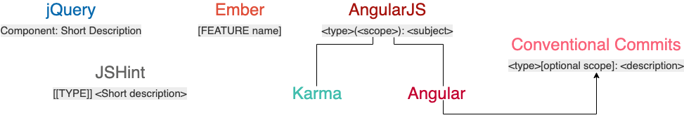
在这些规范中，Angular 规范在功能上能够满足开发者 commit 需求，在格式上清晰易读，目前也是用得最多的。
Angular 规范其实是一种语义化的提交规范（Semantic Commit Messages），所谓语义化的提交规范包含以下内容：
- Commit Message 是语义化的：Commit Message 都会被归为一个有意义的类型，用来说明本次 commit 的类型。
- Commit Message 是规范化的：Commit Message 遵循预先定义好的规范，比如 Commit Message 格式固定、都属于某个类型，这些规范不仅可被开发者识别也可以被工具识别。
为了方便你理解 Angular 规范，我们直接看一个遵循 Angular 规范的 commit 历史记录，见下图：
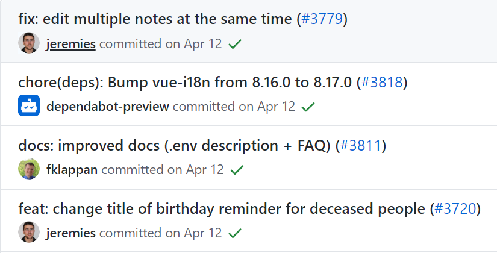
再来看一个完整的符合 Angular 规范的 Commit Message，如下图所示：
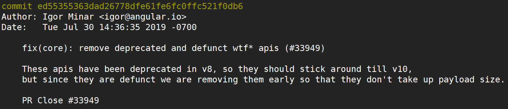
通过上面 2 张图，我们可以看到符合 Angular Commit Message 规范的 commit 都是有一定格式，有一定语义的。
那我们该怎么写出符合 Angular 规范的 Commit Message 呢？
在 Angular 规范中，Commit Message 包含三个部分，分别是 Header、Body 和 Footer，格式如下：
<type>[optional scope]: <description>
// 空行
[optional body]
// 空行
[optional footer(s)]
其中，Header是必需的，Body和Footer可以省略。在以上规范中，<scope>必须用括号 () 括起来， <type>[<scope>] 后必须紧跟冒号 ，冒号后必须紧跟空格，2 个空行也是必需的。
在实际开发中，为了使 Commit Message 在 GitHub 或者其他 Git 工具上更加易读，我们往往会限制每行 message 的长度。根据需要，可以限制为 50/72/100 个字符，这里我将长度限制在 72 个字符以内（也有一些开发者会将长度限制为 100，你可根据需要自行选择）。
以下是一个符合 Angular 规范的 Commit Message：
fix($compile): couple of unit tests for IE9
# Please enter the Commit Message for your changes. Lines starting
# with '#' will be ignored, and an empty message aborts the commit.
# On branch master
# Changes to be committed:
# ...
Older IEs serialize html uppercased, but IE9 does not...
Would be better to expect case insensitive, unfortunately jasmine does
not allow to user regexps for throw expectations.
Closes #392
Breaks foo.bar api, foo.baz should be used instead
接下来，我们详细看看 Angular 规范中 Commit Message 的三个部分。
Header
Header 部分只有一行，包括三个字段：type（必选）、scope（可选）和 subject（必选）。
我们先来说 type，它用来说明 commit 的类型。为了方便记忆，我把这些类型做了归纳，它们主要可以归为 Development 和 Production 共两类。它们的含义是：
- Development：这类修改一般是项目管理类的变更，不会影响最终用户和生产环境的代码，比如 CI 流程、构建方式等的修改。遇到这类修改，通常也意味着可以免测发布。
- Production：这类修改会影响最终的用户和生产环境的代码。所以对于这种改动，我们一定要慎重，并在提交前做好充分的测试。
我在这里列出了 Angular 规范中的常见 type 和它们所属的类别，你在提交 Commit Message 的时候，一定要注意区分它的类别。举个例子，我们在做 Code Review 时，如果遇到 Production 类型的代码，一定要认真 Review，因为这种类型，会影响到现网用户的使用和现网应用的功能。
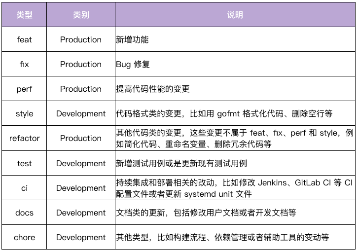
有这么多 type，我们该如何确定一个 commit 所属的 type 呢？这里我们可以通过下面这张图来确定。
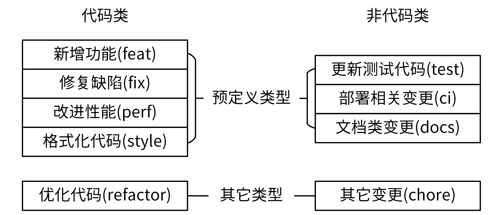
如果我们变更了应用代码，比如某个 Go 函数代码，那这次修改属于代码类。在代码类中，有 4 种具有明确变更意图的类型：feat、fix、perf 和 style；如果我们的代码变更不属于这 4 类，那就全都归为 refactor 类，也就是优化代码。
如果我们变更了非应用代码，例如更改了文档，那它属于非代码类。在非代码类中，有 3 种具有明确变更意图的类型：test、ci、docs；如果我们的非代码变更不属于这 3 类，那就全部归入到 chore 类。
Angular 的 Commit Message 规范提供了大部分的 type，在实际开发中，我们可以使用部分 type，或者扩展添加我们自己的 type。但无论选择哪种方式，我们一定要保证一个项目中的 type 类型一致。
接下来，我们说说 Header 的第二个字段 scope。
scope 是用来说明 commit 的影响范围的，它必须是名词。显然，不同项目会有不同的 scope。在项目初期，我们可以设置一些粒度比较大的 scope，比如可以按组件名或者功能来设置 scope；后续，如果项目有变动或者有新功能，我们可以再用追加的方式添加新的 scope。
我们这门课采用的 scope，主要是根据组件名和功能来设置的。例如，支持 apiserver、authzserver、user 这些 scope。
这里想强调的是，scope 不适合设置太具体的值。太具体的话，一方面会导致项目有太多的 scope，难以维护。另一方面，开发者也难以确定 commit 属于哪个具体的 scope，导致错放 scope，反而会使 scope 失去了分类的意义。
当然了，在指定 scope 时，也需要遵循我们预先规划的 scope，所以我们要将 scope 文档化，放在类似 devel 这类文档中。这一点你可以参考下 IAM 项目的 scope 文档： IAM commit message scope 。
最后，我们再说说 subject。
subject 是 commit 的简短描述，必须以动词开头、使用现在时。比如，我们可以用 change，却不能用 changed 或 changes，而且这个动词的第一个字母必须是小写。通过这个动词，我们可以明确地知道 commit 所执行的操作。此外我们还要注意，subject 的结尾不能加英文句号。
Body
Header 对 commit 做了高度概括，可以方便我们查看 Commit Message。那我们如何知道具体做了哪些变更呢？答案就是，可以通过 Body 部分，它是对本次 commit 的更详细描述，是可选的。
Body 部分可以分成多行，而且格式也比较自由。不过，和 Header 里的 一样，它也要以动词开头，使用现在时。此外，它还必须 要包括修改的动机，以及 和跟上一版本相比的改动点。
我在下面给出了一个范例，你可以看看：
The body is mandatory for all commits except for those of scope "docs". When the body is required it must be at least 20 characters long.
Footer
Footer 部分不是必选的，可以根据需要来选择，主要用来说明本次 commit 导致的后果。在实际应用中，Footer 通常用来说明不兼容的改动和关闭的 Issue 列表，格式如下：
BREAKING CHANGE: <breaking change summary>
// 空行
<breaking change description + migration instructions>
// 空行
// 空行
Fixes #<issue number>
接下来，我给你详细说明下这两种情况：
- 不兼容的改动：如果当前代码跟上一个版本不兼容，需要在 Footer 部分，以
BREAKING CHANG:开头，后面跟上不兼容改动的摘要。Footer 的其他部分需要说明变动的描述、变动的理由和迁移方法，例如：
BREAKING CHANGE: isolate scope bindings definition has changed and
the inject option for the directive controller injection was removed.
To migrate the code follow the example below:
Before:
scope: {
myAttr: 'attribute',
}
After:
scope: {
myAttr: '@',
}
The removed `inject` wasn't generaly useful for directives so there should be no code using it.
- 关闭的 Issue 列表：关闭的 Bug 需要在 Footer 部分新建一行，并以 Closes 开头列出，例如：
Closes #123。如果关闭了多个 Issue，可以这样列出：Closes #123, #432, #886。例如:
Change pause version value to a constant for image
Closes #1137
Revert Commit
除了 Header、Body 和 Footer 这 3 个部分，Commit Message 还有一种特殊情况：如果当前 commit 还原了先前的 commit，则应以 revert: 开头，后跟还原的 commit 的 Header。而且，在 Body 中必须写成 This reverts commit <hash> ，其中 hash 是要还原的 commit 的 SHA 标识。例如：
revert: feat(iam-apiserver): add 'Host' option
This reverts commit 079360c7cfc830ea8a6e13f4c8b8114febc9b48a.
为了更好地遵循 Angular 规范，建议你在提交代码时养成不用 git commit -m，即不用-m 选项的习惯，而是直接用 git commit 或者 git commit -a 进入交互界面编辑 Commit Message。这样可以更好地格式化 Commit Message。
但是除了 Commit Message 规范之外，在代码提交时，我们还需要关注 3 个重点内容：提交频率、合并提交和 Commit Message 修改。
Commit 相关的 3 个重要内容
我们先来看下提交频率。
提交频率
在实际项目开发中，如果是个人项目，随意 commit 可能影响不大，但如果是多人开发的项目，随意 commit 不仅会让 Commit Message 变得难以理解，还会让其他研发同事觉得你不专业。因此，我们要规定 commit 的提交频率。
那到底什么时候进行 commit 最好呢？
我认为主要可以分成两种情况。一种情况是，只要我对项目进行了修改，一通过测试就立即 commit。比如修复完一个 bug、开发完一个小功能，或者开发完一个完整的功能，测试通过后就提交。另一种情况是，我们规定一个时间，定期提交。这里我建议代码下班前固定提交一次，并且要确保本地未提交的代码，延期不超过 1 天。这样，如果本地代码丢失，可以尽可能减少丢失的代码量。
按照上面 2 种方式提交代码，你可能会觉得代码 commit 比较多，看起来比较随意。或者说，我们想等开发完一个完整的功能之后，放在一个 commit 中一起提交。这时候，我们可以在最后合并代码或者提交 Pull Request 前，执行 git rebase -i 合并之前的所有 commit。
那么如何合并 commit 呢？接下来，我来详细说说。
合并提交
合并提交，就是将多个 commit 合并为一个 commit 提交。这里，我建议你把新的 commit 合并到主干时，只保留 2~3 个 commit 记录。那具体怎么做呢？
在 Git 中，我们主要使用 git rebase 命令来合并。git rebase 也是我们日后开发需要经常使用的一个命令，所以我们一定要掌握好它的使用方法。
git rebase 命令介绍
git rebase 的最大作用是它可以重写历史。
我们通常会通过 git rebase -i <commit ID>使用 git rebase 命令，-i 参数表示交互（interactive），该命令会进入到一个交互界面中，其实就是 Vim 编辑器。在该界面中，我们可以对里面的 commit 做一些操作，交互界面如图所示：
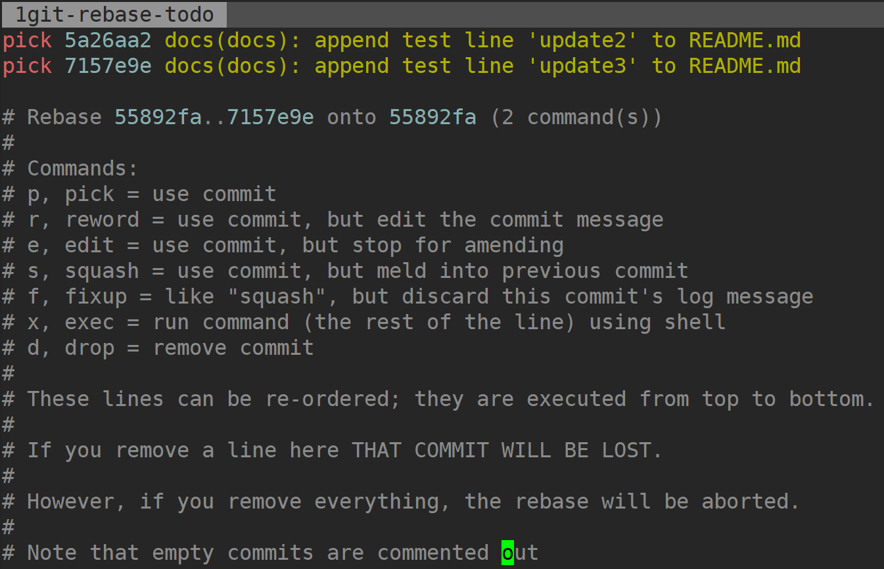
这个交互界面会首先列出给定<commit ID>之前（不包括 ，越下面越新）的所有 commit，每个 commit 前面有一个操作命令，默认是 pick。我们可以选择不同的 commit，并修改 commit 前面的命令，来对该 commit 执行不同的变更操作。
git rebase 支持的变更操作如下：
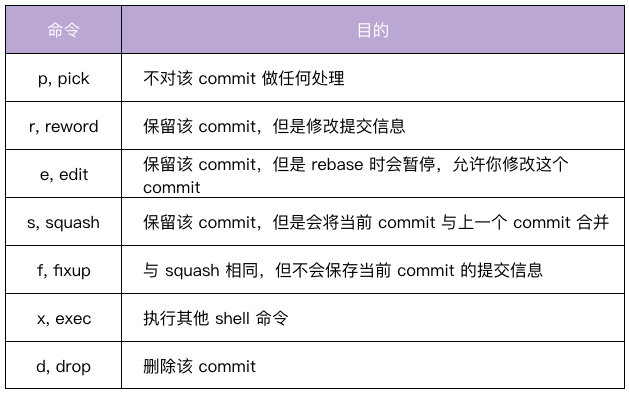
在上面的 7 个命令中，squash 和 fixup 可以用来合并 commit。例如用 squash 来合并，我们只需要把要合并的 commit 前面的动词，改成 squash（或者 s）即可。你可以看看下面的示例：
pick 07c5abd Introduce OpenPGP and teach basic usage
s de9b1eb Fix PostChecker::Post#urls
s 3e7ee36 Hey kids, stop all the highlighting
pick fa20af3 git interactive rebase, squash, amend
rebase 后，第 2 行和第 3 行的 commit 都会合并到第 1 行的 commit。这个时候，我们提交的信息会同时包含这三个 commit 的提交信息：
# This is a combination of 3 commits.
# The first commit's message is:
Introduce OpenPGP and teach basic usage
# This is the 2ndCommit Message:
Fix PostChecker::Post#urls
# This is the 3rdCommit Message:
Hey kids, stop all the highlighting
如果我们将第 3 行的 squash 命令改成 fixup 命令：
pick 07c5abd Introduce OpenPGP and teach basic usage
s de9b1eb Fix PostChecker::Post#urls
f 3e7ee36 Hey kids, stop all the highlighting
pick fa20af3 git interactive rebase, squash, amend
rebase 后，还是会生成两个 commit，第 2 行和第 3 行的 commit，都合并到第 1 行的 commit。但是，新的提交信息里面，第 3 行 commit 的提交信息会被注释掉：
# This is a combination of 3 commits.
# The first commit's message is:
Introduce OpenPGP and teach basic usage
# This is the 2ndCommit Message:
Fix PostChecker::Post#urls
# This is the 3rdCommit Message:
# Hey kids, stop all the highlighting
除此之外，我们在使用 git rebase 进行操作的时候，还需要注意以下几点：
- 删除某个 commit 行，则该 commit 会丢失掉。
- 删除所有的 commit 行，则 rebase 会被终止掉。
- 可以对 commits 进行排序，git 会从上到下进行合并。
为了加深你的理解，我给你完整演示一遍合并提交。
合并提交操作示例
假设我们需要研发一个新的模块：user，用来在平台里进行用户的注册、登录、注销等操作，当模块完成开发和测试后，需要合并到主干分支，具体步骤如下。
首先，我们新建一个分支。我们需要先基于 master 分支新建并切换到 feature 分支：
$ git checkout -b feature/user
Switched to a new branch 'feature/user'
这是我们的所有 commit 历史：
$ git log --oneline
7157e9e docs(docs): append test line 'update3' to README.md.html
5a26aa2 docs(docs): append test line 'update2' to README.md.html
55892fa docs(docs): append test line 'update1' to README.md.html
89651d4 docs(doc): add README.md.html
接着，我们在 feature/user分支进行功能的开发和测试，并遵循规范提交 commit，功能开发并测试完成后，Git 仓库的 commit 记录如下：
$ git log --oneline
4ee51d6 docs(user): update user/README.md.html
176ba5d docs(user): update user/README.md.html
5e829f8 docs(user): add README.md.html for user
f40929f feat(user): add delete user function
fc70a21 feat(user): add create user function
7157e9e docs(docs): append test line 'update3' to README.md.html
5a26aa2 docs(docs): append test line 'update2' to README.md.html
55892fa docs(docs): append test line 'update1' to README.md.html
89651d4 docs(doc): add README.md.html
可以看到我们提交了 5 个 commit。接下来，我们需要将 feature/user分支的改动合并到 master 分支，但是 5 个 commit 太多了，我们想将这些 commit 合并后再提交到 master 分支。
接着，我们合并所有 commit。在上一步中，我们知道 fc70a21是 feature/user分支的第一个 commit ID，其父 commit ID 是 7157e9e，我们需要将7157e9e之前的所有分支 进行合并，这时我们可以执行：
$ git rebase -i 7157e9e
执行命令后，我们会进入到一个交互界面，在该界面中，我们可以将需要合并的 4 个 commit，都执行 squash 操作，如下图所示：
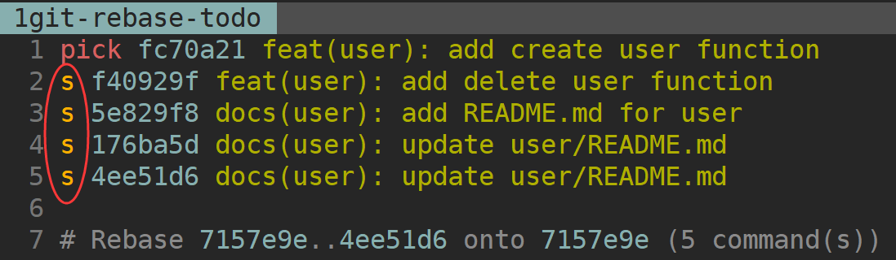
修改完成后执行:wq 保存，会跳转到一个新的交互页面，在该页面，我们可以编辑 Commit Message，编辑后的内容如下图所示：
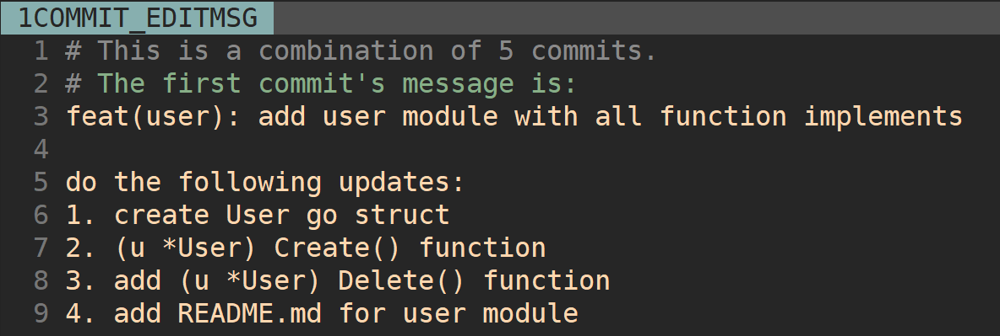
#开头的行是 git 的注释，我们可以忽略掉，在 rebase 后，这些行将会消失掉。修改完成后执行:wq 保存，就完成了合并提交操作。
除此之外，这里有 2 个点需要我们注意：
git rebase -i <commid ID>这里的 一定要是需要合并 commit 中最旧 commit 的父 commit ID。- 我们希望将 feature/user 分支的 5 个 commit 合并到一个 commit，在 git rebase 时，需要保证其中最新的一个 commit 是 pick 状态，这样我们才可以将其他 4 个 commit 合并进去。
然后，我们用如下命令来检查 commits 是否成功合并。可以看到，我们成功将 5 个 commit 合并成为了一个 commit：d6b17e0。
$ git log --oneline
d6b17e0 feat(user): add user module with all function implements
7157e9e docs(docs): append test line 'update3' to README.md.html
5a26aa2 docs(docs): append test line 'update2' to README.md.html
55892fa docs(docs): append test line 'update1' to README.md.html
89651d4 docs(doc): add README.md.html
最后，我们就可以将 feature 分支 feature/user 的改动合并到主干分支，从而完成新功能的开发。
$ git checkout master
$ git merge feature/user
$ git log --oneline
d6b17e0 feat(user): add user module with all function implements
7157e9e docs(docs): append test line 'update3' to README.md.html
5a26aa2 docs(docs): append test line 'update2' to README.md.html
55892fa docs(docs): append test line 'update1' to README.md.html
89651d4 docs(doc): add README.md.html
这里给你一个小提示，如果你有太多的 commit 需要合并，那么可以试试这种方式：先撤销过去的 commit，然后再建一个新的。
$ git reset HEAD~3
$ git add .
$ git commit -am "feat(user): add user resource"
需要说明一点：除了 commit 实在太多的时候，一般情况下我不建议用这种方法，有点粗暴，而且之前提交的 Commit Message 都要重新整理一遍。
修改 Commit Message
即使我们有了 Commit Message 规范，但仍然可能会遇到提交的 Commit Message 不符合规范的情况，这个时候就需要我们能够修改之前某次 commit 的 Commit Message。
具体来说，我们有两种修改方法，分别对应两种不同情况：
- git commit –amend：修改最近一次 commit 的 message；
- git rebase -i：修改某次 commit 的 message。
接下来，我们分别来说这两种方法。
git commit –amend：修改最近一次 commit 的 message
有时候，我们刚提交完一个 commit，但是发现 commit 的描述不符合规范或者需要纠正，这时候，我们可以通过 git commit --amend 命令来修改刚刚提交 commit 的 Commit Message。具体修改步骤如下：
- 查看当前分支的日志记录。
$ git log –oneline
418bd4 docs(docs): append test line 'update$i' to README.md.html
89651d4 docs(doc): add README.md.html
可以看到，最近一次的 Commit Message 是 docs(docs): append test line 'update$i' to README.md.html，其中 update$i 正常应该是 update1。
- 更新最近一次提交的 Commit Message
在当前 Git 仓库下执行命令：git commit --amend，后会进入一个交互界面，在交互界面中，修改最近一次的 Commit Message，如下图所示：
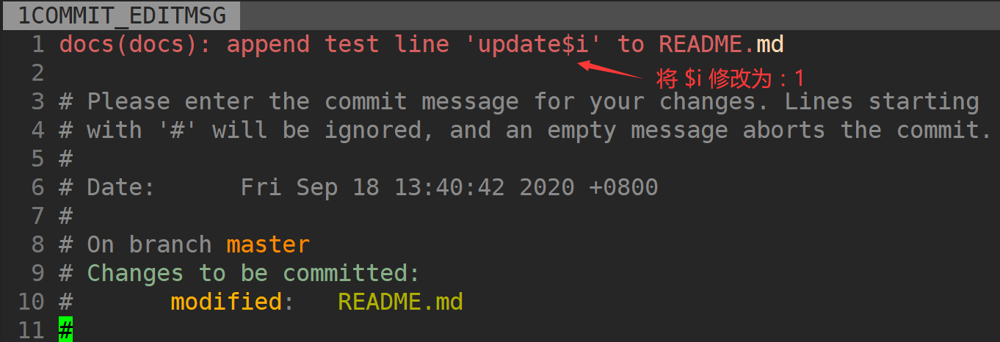
修改完成后执行:wq 保存，退出编辑器之后，会在命令行显示，该 commit 的 message 的更新结果如下：
[master 55892fa] docs(docs): append test line 'update1' to README.md.html
Date: Fri Sep 18 13:40:42 2020 +0800
1 file changed, 1 insertion(+)
- 查看最近一次的 Commit Message 是否被更新
$ git log --oneline
55892fa docs(docs): append test line 'update1' to README.md.html
89651d4 docs(doc): add README.md.html
可以看到最近一次 commit 的 message 成功被修改为期望的内容。
git rebase -i：修改某次 commit 的 message
如果我们想修改的 Commit Message 不是最近一次的 Commit Message，可以通过 git rebase -i <父 commit ID>命令来修改。这个命令在实际开发中使用频率比较高，我们一定要掌握。具体来说，使用它主要分为 4 步。
- 查看当前分支的日志记录。
$ git log --oneline
1d6289f docs(docs): append test line 'update3' to README.md.html
a38f808 docs(docs): append test line 'update$i' to README.md.html
55892fa docs(docs): append test line 'update1' to README.md.html
89651d4 docs(doc): add README.md.html
可以看到倒数第 3 次提交的 Commit Message 是：docs(docs): append test line 'update$i' to README.md.html，其中 update$i 正常应该是 update2。
- 修改倒数第 3 次提交 commit 的 message。
在 Git 仓库下直接执行命令 git rebase -i 55892fa，然后会进入一个交互界面。在交互界面中，修改最近一次的 Commit Message。这里我们使用 reword 或者 r，保留倒数第3次的变更信息，但是修改其 message，如下图所示：
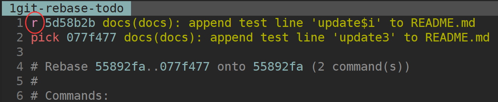
修改完成后执行:wq 保存，还会跳转到一个新的交互页面，如下图所示：
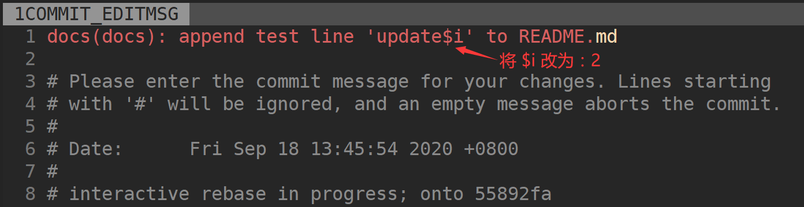
修改完成后执行:wq 保存，退出编辑器之后，会在命令行显示该 commit 的 message 的更新结果：
[detached HEAD 5a26aa2] docs(docs): append test line 'update2' to README.md.html
Date: Fri Sep 18 13:45:54 2020 +0800
1 file changed, 1 insertion(+)
Successfully rebased and updated refs/heads/master.
Successfully rebased and updated refs/heads/master.说明 rebase 成功，其实这里完成了两个步骤：更新 message，更新该 commit 的 HEAD 指针。
注意：这里一定要传入想要变更 Commit Message 的父 commit ID：git rebase -i <父 commit ID>。
- 查看倒数第 3 次 commit 的 message 是否被更新。
$ git log --oneline
7157e9e docs(docs): append test line 'update3' to README.md.html
5a26aa2 docs(docs): append test line 'update2' to README.md.html
55892fa docs(docs): append test line 'update1' to README.md.html
89651d4 docs(doc): add README.md.html
可以看到，倒数第 3 次 commit 的 message 成功被修改为期望的内容。
这里有两点需要你注意：
- Commit Message 是 commit 数据结构中的一个属性，如果 Commit Message 有变更，则 commit ID 一定会变，
git commit --amend只会变更最近一次的 commit ID，但是git rebase -i会变更父 commit ID 之后所有提交的 commit ID。 - 如果当前分支有未 commit 的代码，需要先执行
git stash将工作状态进行暂存，当修改完成后再执行git stash pop恢复之前的工作状态。
Commit Message 规范自动化
其实，到这里我们也就意识到了一点：Commit Message 规范如果靠文档去约束，就会严重依赖开发者的代码素养，并不能真正保证提交的 commit 是符合规范的。
那么，有没有一种方式可以确保我们提交的 Commit Message 一定是符合规范的呢？有的，我们可以通过一些工具，来自动化地生成和检查 Commit Message 是否符合规范。
另外，既然 Commit Message 是规范的，那么我们能不能利用这些规范来实现一些更酷的功能呢？答案是有的，我将可以围绕着 Commit Message 实现的一些自动化功能绘制成了下面一张图。
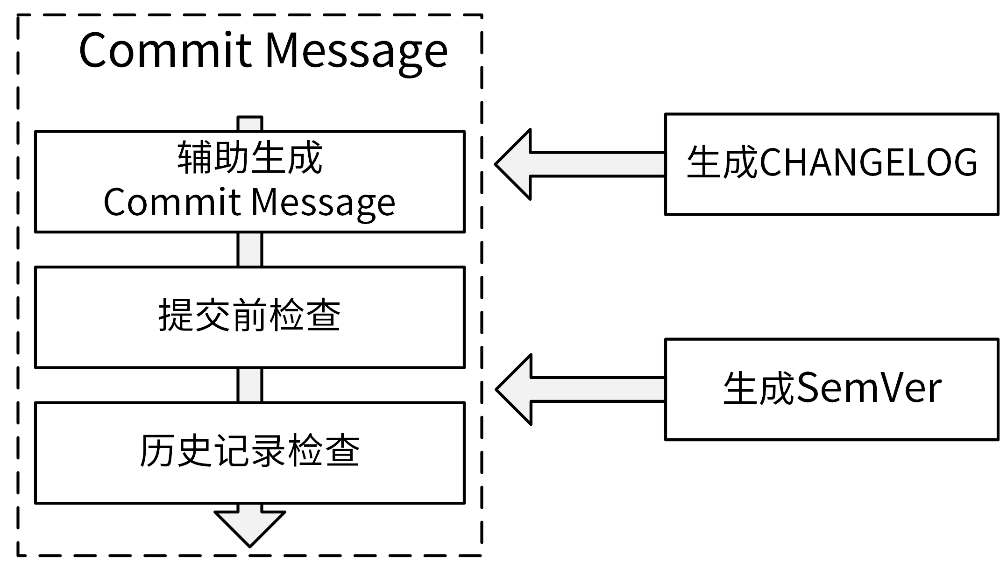
这些自动化功能可以分为以下 2 类：
- Commit Message 生成和检查功能：生成符合 Angular 规范的 Commit Message、Commit Message 提交前检查、历史 Commit Message 检查。
- 基于 Commit Message 自动生成 CHANGELOG 和 SemVer 的工具。
我们可以通过下面这 5 个工具自动的完成上面的功能：
- commitizen-go：使你进入交互模式，并根据提示生成 Commit Message，然后提交。
- commit-msg：githooks，在 commit-msg 中，指定检查的规则，commit-msg 是个脚本，可以根据需要自己写脚本实现。这门课的 commit-msg 调用了 go-gitlint 来进行检查。
- go-gitlint：检查历史提交的 Commit Message 是否符合 Angular 规范，可以将该工具添加在 CI 流程中，确保 Commit Message 都是符合规范的。
- gsemver：语义化版本自动生成工具。
- git-chglog：根据 Commit Message 生成 CHANGELOG。
这些工具你先有个印象就好了，在后面的课程内容中，我会带你通过实际使用来熟悉它们的用法。
总结
今天我向你介绍了 Commit Message 规范，主要讲了业界使用最多的 Angular 规范。
Angular 规范中，Commit Message 包含三个部分：Header、Body 和 Footer。Header 对 commit 做了高度概括，Body 部分是对本次 commit 的更详细描述，Footer 部分主要用来说明本次 commit 导致的后果。格式如下：
<type>[optional scope]: <description>
// 空行
[optional body]
// 空行
[optional footer(s)]
另外，我们也需要控制 commit 的提交频率，比如可以在开发完一个功能、修复完一个 bug、下班前提交 commit。
最后，我们也需要掌握一些常见的提交操作，例如通过 git rebase -i 来合并提交 commit，通过 git commit --amend 或 git rebase -i 来修改 commit message。
课后练习
- 新建一个 git repository，提交 4 个符合 Angular 规范的 Commit Message，并合并前 2 次提交。
- 使用 git-chglog 工具来生成 CHANGEOG，使用 gsemver 工具来生成语义化版本号。
期待在留言区看到你的思考和答案，也欢迎和我一起探讨关于规范设计的问题，我们下一讲见！
© 2019 - 2023 Liangliang Lee. Powered by gin and hexo-theme-book.